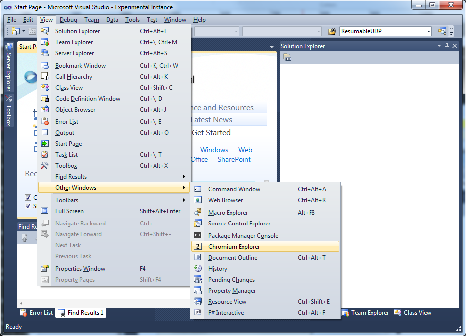

Chromium Explorer
"Chromium Explorer" is a custom Tool Window aimed at making it easy and fast to navigate and search a Chromium local enlistment. The tool window is accessible from the "View | Other Windows | Chromium Explorer" menu entry.
At the top of the window, there are 3 search boxes that allow searching files and folders of the Chromium enlistement. As noted above, the main focus here is to enable precise, powerful and fast searches.